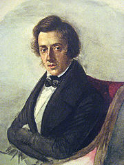

Famous Pieces
- Beethoven - Moonlight Sonata
- Debussy - Clair de Lune
- Chopin - March Funebre
- Schumann - Arabeske
- Beethoven - Fur Elise
- Mozart - Rondo Alla Turca
- Liszt - Hungarian Rhapsody No. 2
- Rimsky-Korsakov - Flight of the Bumblebee
- Gershwin - Rhapsody in Blue
- Beethoven - Sonata Pathetique
- Chopin - Minute Waltz 
- Schumann - Kinderszenen
- Beethoven - Diabelli Variations Op. 120
- Dvorak - Humoresque